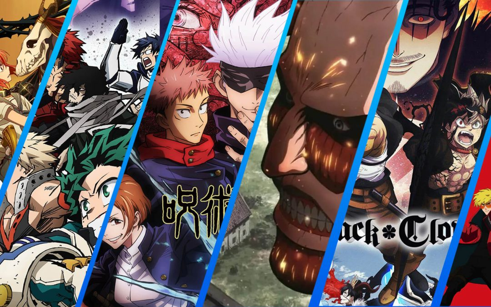
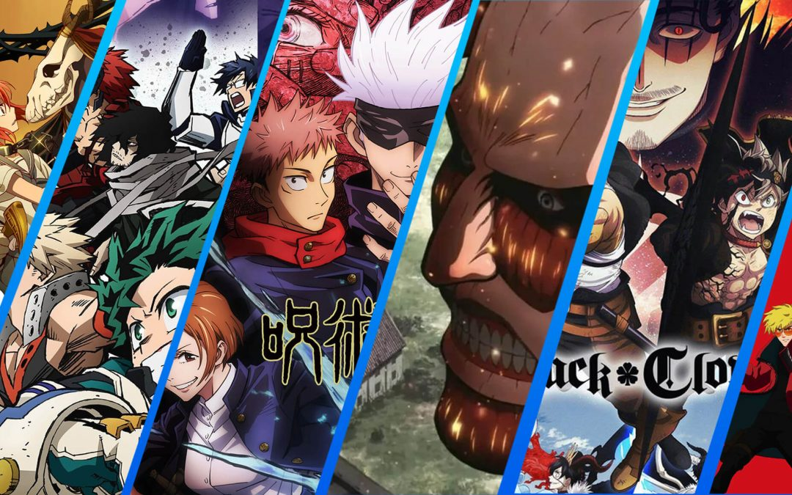

Sobre mí:
Nombre Completo: Daniel Fernando Solarte Ortega.
Fecha Nacimiento: 16 de Octubre de 2002.
Edad: 21 años.
Me crie en un pequeño pueblo al sur del Cauca llamado Florencia. Soy hijo unico y siempre he querido tener un hermano/a menor. En mi infancia solia ser un niño bastante animado e inquieto pero conforme he ido creciendo me he convertido en alguien mas bien tranquilo y callado. De pequeño me empece a interesar por los juegos de computador lo cual causo que haya decidido estudiar ingenieria de sistemas en la Universidad del Cauca.
Proyeccion Laboral:
Mis expectativas respecto a mi vida laboral son bastante claras para mi ya que pienso terminar el pregrado de ingenieria de sistemas para luego estudiar la maestria en computacion y finalmente ya entrar al mercado laboral en el cual no tengo muchas ansias de llegar a ocupar puestos o rangos altos en empresas sino mas bien ya que esto seria mucha responsabilidad para mi y al tener una personalidad bastante calmada deseo seguir teniendo una vida asi.
 
